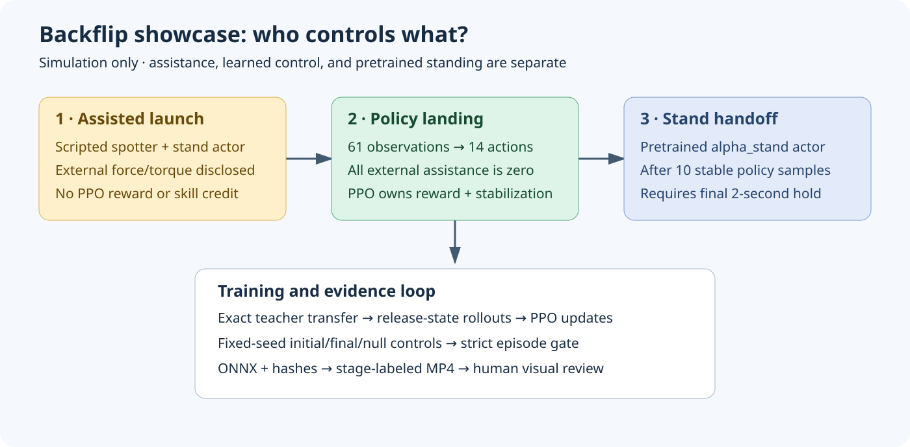
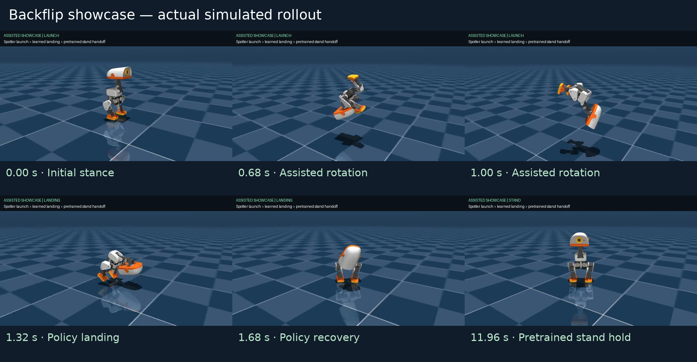
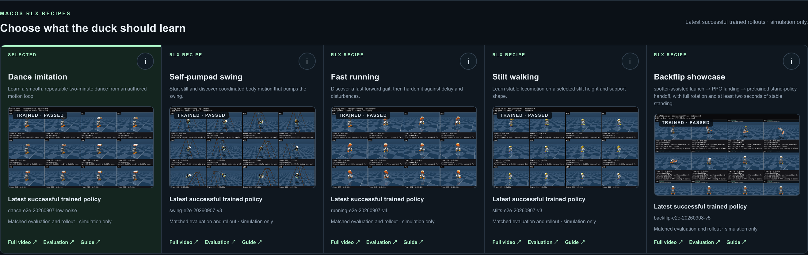
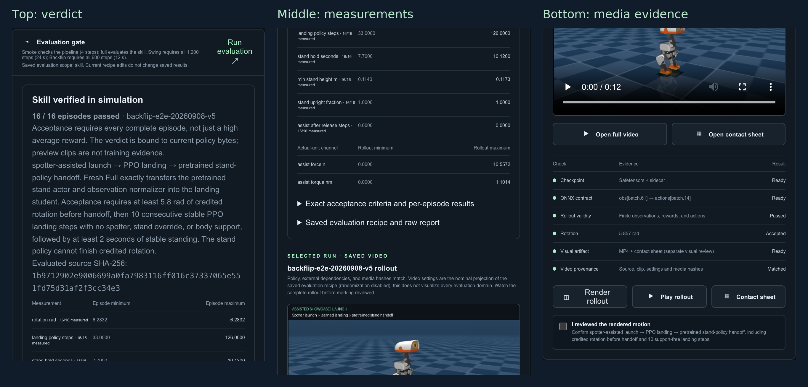

Author: George Hu
Date: September 8, 2026
Scope: local MuJoCo simulation, RLX PPO, and the five-scenario
Studio
This is an assisted demonstration, not an autonomous backflip learned from scratch. A simulated spotter supplies lift and rotation. A pretrained actor initializes the landing policy; PPO updates that actor, but improvement must be established by paired evaluation, not assumed. A separate pretrained stand controller takes over only after the landing policy demonstrates stable support. Neither the launch nor the final stand hold is credited to PPO.

Backflip is the fifth selectable Studio scenario beside Dance, Swing, Running, and Stilts. It uses the existing job queue, saved runs, training telemetry, deterministic evaluation, MP4/contact-sheet renderer, source-bound verification, and ONNX download. The other four environments and rewards are unchanged.
The new Python environment lives in
rlx/rlx/environments/backflip.py. The physical gate lives
in rlx/rlx/environments/backflip_evaluation.py. The
initializer is in rlx/rlx/models/backflip_bootstrap.py. The
common CLI is rlx/examples/ppo_microduck_studio.py.
The scenario uses the same 61-observation / 14-action interface. No extra phase, world position, or privileged contact channels are given to the actor. The composite controller knows its stage; the landing actor does not receive that stage as an extra observation.
The first API smoke uncovered an actual macOS Objective-C
initialization crash when ONNX Runtime was first loaded in forked
workers. Backflip now uses the existing dummy vector
backend, keeping simulation in the parent process. This avoids unsafe
Objective-C fork workarounds. Other scenarios retain their existing
backend choices.
The initial torque-only launch released around 4.6 radians with high angular speed. Initial experiments were not accepted merely because training finished:
| Experiment | Fixed evaluation | Observed outcome |
|---|---|---|
| Behavior-cloned initializer, original gate | Seeds 101–104 | 3/4 showcase passes |
| First 100k PPO transitions | Same four seeds and original gate | 0/4 |
| BC + 2,000,896 PPO transitions | Strengthened gate, seeds 101–104 | 0/4 |
| Frozen-normalizer BC + 200,704 PPO transitions | Strengthened gate, seeds 101–104 | 0/4 |
| Exact teacher transfer, old launch | Strengthened gate, seeds 101–108 | 4/8 |
| Exact transfer + 200,704 low-rate PPO transitions, old launch | Same eight seeds | 4/8 |
| Revised assisted launch, unchanged teacher landing | Strengthened gate, seeds 101–108 | 8/8 |
| Revised assisted launch, zero-action landing | Same eight seeds | 0/8 |
| Revised launch, transfer + 2M PPO | Default seeds 7–22 | 14/16; rejected |
| Fresh revised-launch 401,408-step run | Default seeds 7–22 | 16/16 physical passes |
| Same fresh run, independent audit | Seeds 401–408 | 8/8 showcase and 8/8 landing-only passes; PPO refinement fails |
The first two rows used an earlier, weaker handoff check and are not directly comparable with the strengthened gate. They are retained to explain the debugging path, not to manufacture a learning curve across different tasks.
The lesson is important: a better-looking reward cannot fix an inconsistent release state or a degraded initializer. We changed the explicitly assisted launch physics and preserved the same landing reward. We also replaced approximate cloning with exact teacher weight/normalizer transfer. The cloning implementation remains available for reproducing the rejected study, but it is not the default initializer.
Protocol spotter-launch-landing-stand-v2 uses a
1.2-second cubic Hermite pitch target from zero to 5.3 radians with a
terminal target rate of 5 rad/s. A smooth height target rises from 0.12
m to 0.32 m and lowers toward 0.22 m before release. The spotter acts
through MuJoCo generalized external forces, not by teleporting the
robot's position or orientation.
The pitch controller uses proportional gain 1.5, derivative gain 0.24, and a 1.3 Nm torque clamp. The vertical controller includes gravity compensation, position gain 90, velocity damping 8.5, and a 15 N force clamp. Lateral velocity damping is 3; roll/yaw angular damping is 0.1. These are simulator assistance parameters, not actuator settings suitable for the physical robot.
Release requires rotation at least 5.3 radians and backward angular speed in the range 3.5–6.5 rad/s. Failure to reach that window raises an error; the controller does not silently convert a bad launch into success. The selected probe produced releases near 5.38 radians, 5.1–5.3 rad/s, and 0.211–0.212 m.
Every external force and torque is cleared at release. The first
landing action replaces any queued teacher command in the action-delay
buffer. The legacy assist_torque_norm field is a
generalized-force zero-detection channel;
assist_force_n and assist_torque_nm report
forces and torques separately in physical units.
During training, reset simulates the same real assisted launch, then returns the release observation to PPO. Assisted preparation steps are outside the PPO transition budget and receive no PPO reward. Every collected training action belongs to the landing actor. There is no stand-policy override in training.
During the showcase, the landing actor must reach at least 5.8 radians and produce ten consecutive stable samples (0.2 seconds at 50 Hz):
Only after that pre-handoff evidence does
alpha_stand.onnx take control. The evaluator independently
reconstructs the preceding stability streak and rotation at handoff. The
stand controller cannot finish the required rotation on behalf of a
failed landing actor. Acceptance also requires the final 100 consecutive
samples, or two seconds, to remain stable.
All complete requested episodes must pass. An incomplete trace, missing or nonfinite metric, one failed seed, post-release assistance, or an unsupported handoff fails the skill gate. A pipeline smoke never becomes skill evidence.
The reward is active only during the landing stage. Both launch and pretrained stand stages return zero for every reward component.
Let g_z be projected gravity, e_j the
offset of joint j from the standard pose,
omega the measured angular velocity, v_j joint
velocity, and a_j the current action. Define:
U = clip((1 - g_z) / 2, 0, 1)
P = mean_j[0.5 exp(-e_j² / 0.60²) + 0.5 exp(-e_j² / 0.15²)]
S = exp(-||omega||² / 2)
J = -mean_j[min(v_j² / 100, 1)]
D = -mean_j[min((a_j - previous_a_j)², 1)]
A = -mean_j[min(a_j² / 16, 1)]
r = 3 U + 2 U P + U P S + 0.05 J + 0.02 D + 0.01 A| Term / UI weight | Why it exists | Observable input |
|---|---|---|
landing_upright, 3 |
Dense recovery direction even away from the target | Gravity, indices 3–5 |
landing_pose, 2 |
Broad 0.60-rad kernel guides recovery; narrow 0.15-rad kernel distinguishes precise poses | Joint offsets, indices 6–19 |
landing_settle, 1 |
Rewards low angular motion only together with upright posture and pose matching | Gyro, indices 0–2; gravity and joints |
landing_joint_speed_penalty, 0.05 |
Discourages unnecessary joint motion without an unbounded impact cost | Joint velocity, indices 20–33 |
landing_action_rate_penalty, 0.02 |
Discourages abrupt command changes | Previous action, indices 34–47, and chosen action |
landing_action_size_penalty, 0.01 |
Discourages large commands and actuator clipping | Chosen action |
Each positive component is in [0,1] before its weight, and each penalty is in [-1,0]. Therefore the total reward is bounded by -0.08 and 6. Penalty weights are nonnegative; there is no double-negation path that rewards violations.
The reward deliberately does not use hidden world position, yaw, phase, or a jackpot for crossing a rotation threshold. It also does not prove touchdown: an upright airborne pose can score well. Foot support, body contact, height, and consecutive physical stability belong to the independent acceptance gate. This separation is why reward curves alone cannot establish success.
The stand teacher has the same 512–256–128 actor architecture, ELU
activations, 61 inputs, and 14 outputs. The initializer verifies the
ONNX graph structure, copies actor weights and its normalizer, and
checks native/teacher actions on 9,600 release-rollout observations. A
mismatch above 1e-4 fails initialization. The normalizer is
then frozen, so PPO cannot silently change the meaning of the
transferred inputs. This is transfer learning, not training from
scratch.
PPO optimizes a clipped likelihood-ratio objective. For old/new
policies and advantage estimate Adv_t:
ratio_t = pi_new(a_t | o_t) / pi_old(a_t | o_t)
surrogate_t = min(ratio_t * Adv_t,
clip(ratio_t, 1-epsilon, 1+epsilon) * Adv_t)The optimizer minimizes the negative policy surrogate plus the configured value loss and entropy term. Advantages use discounted rewards and generalized advantage estimation. Clipping discourages excessive changes; it is not a hard guarantee on the size of every update. Approximate KL, clipping fraction, value loss, and actual deterministic outcomes must still be examined.
recipe.json is the machine-readable source for the final
run.
| Parameter | Value | Purpose and trade-off |
|---|---|---|
| PPO environment transitions | 401,408 | Rounded from 400k to a complete 2,048-transition batch; excludes assisted reset preparation |
| Environments | 16 | Diverse reset states in the existing serial vector adapter |
| Steps per environment / update | 128 | 2.56-second rollout segments for advantage estimates |
| Minibatches | 4 | 512 transitions per optimizer minibatch |
| Update epochs | 2 | Limits repeated optimization on the same rollout |
| Learning rate | 0.000003 | Conservative refinement of a transferred actor rather than large early changes |
| Initial action standard deviation | 0.03 | Low-noise exploration around a competent controller |
| Discount factor | 0.99 | Balances immediate landing control with future stability |
| GAE lambda | 0.95 | Existing bias/variance balance for advantages |
| PPO clipping coefficient | 0.2 | Limits the clipped surrogate ratio |
| Maximum gradient norm | 0.5 | Bounds aggregate optimizer gradient magnitude |
| Entropy coefficient | 0 | No extra incentive to inject landing noise |
| Value coefficient / value clipping | 1 / enabled | Critic contribution and clipped value-update objective |
| Advantage normalization | Enabled | Centers and scales minibatch advantages |
| Reward normalization | On | Stabilizes critic scale; raw reward is also retained separately |
| Observation normalization | Frozen transferred statistics | Preserves teacher input semantics |
| Seed | 7 | Reproduces training initialization and reset streams |
| Domain randomization, noise, delay, yaw | Off | First learn and verify a controlled simulation case |
| Episode horizon | 12 seconds | Preserved training/showcase horizon; evaluation measures every complete episode |
| Checkpoint interval | 100,000 nominal transitions | Actual saved steps round to complete rollouts |
Before PPO, the current initializer collects 16 teacher episodes of
600 landing steps and calibrates discounted-return RMS from those
9,600 measured samples. It fits the critic for 10
epochs using Adam at 3e-4 and minibatches of at most 256
observations. The actor is untouched; parity is checked again after
critic fitting. Targets include a steady-state bootstrap tail rather
than pretending that a time-limit truncation is a physical terminal
state. Both actor and critic enter PPO with a fresh PPO optimizer. The
calibrated reward scale is then fixed, not updated each
control step. These teacher calibration and critic fitting steps are not
included in the reported PPO transition budget.
Actor observation normalization uses the transferred standard
deviation exactly (epsilon=0, a very high finite
observation clamp). This is distinct from adapting statistics on new
rollouts. ONNX export bakes those statistics into the model so raw
61-dimensional observations remain its public interface.
./restart-lab.sh and select
Backflip showcase.From the workspace root, choose a new run name to preserve previous evidence:
cd duck-viewer
node scripts/rlx-dance-api-e2e.mjs --execute \
--experiment backflip --run backflip-reproduction-001 \
--profile full --recipe-json ../docs/backflip-showcase/recipe.json \
--report ../.restart-lab/backflip-reproduction-001.json
cd ..
rlx/.venv-microduck/bin/python rlx/scripts/audit_backflip.py \
--run rlx/runs/studio/backflip/backflip-reproduction-001 \
--output rlx/artifacts/backflip-reproduction-001 \
--seeds 101,102,103,104,105,106,107,108Run the same API driver with --profile smoke and a
different run name for a four-transition wiring check. A smoke pass does
not substitute for Full training, physical evaluation, or visual
review.
The current recipe reproduces backflip-e2e-20260908-v5.
Its API training, including initialization, took 128.40
seconds on this Mac. Evaluation took 4.10 seconds, rendering
8.29 seconds, and export 0.55 seconds. These are measured local job
durations, not a performance guarantee for another computer.
V5 passed 16/16 default showcase episodes and
8/8 independent showcase episodes on seeds 801–808. Its
exported policy and standalone landing actor passed ONNX parity below
1e-6. With the stand handoff removed, 7/8
seeds met the final stable-hold check; seed 808 had only 45 stable
samples in the final 100. Its paired raw landing return was
2978.57 versus 3409.02 for the initializer, a
12.63% regression. Consequently, the extended learning
audit still reports FAIL. The successful three-stage
showcase must not be presented as successful PPO improvement or as a
reliable standalone landing controller outside its tested handoff
contract.
The repaired normalization defect was real: the former cold RMS produced an initial scale near 0.0324 that grew to about 120.42 in one rollout, inflating a raw reward of 3.48 to a normalized reward of 107.44. V5 starts from a measured discounted-return standard deviation of 147.2994 and keeps it fixed. The first collection mean is a finite 0.03612, without that artificial startup spike. This fixes reward-scale contamination; it does not eliminate the separately measured policy drift, and it did not satisfy the improvement gate.



Detailed latest evidence lives in
rlx/artifacts/backflip-e2e-20260908-v5/. Its MP4 is
rlx/runs/studio/backflip/backflip-e2e-20260908-v5/render/ep0.mp4.
The plots are 300 dpi and printed on landscape pages for readable
labels.
The reproduced run is backflip-e2e-20260908-v4. The real
API completed train, evaluation, rendering, and export. Its default
evaluation passed 16/16 episodes. A separate audit on
seeds 401–408 passed 8/8 showcases and
8/8 landing-only episodes without any stand-controller
handoff. Zero actions failed all eight episodes in both protocols.
However, the PPO improvement requirement is not met. The initializer was already a competent landing actor. The final actor has a lower paired landing-only raw return on every audited seed, despite retaining physical success. The audit deliberately reports overall FAIL, with physical-success gates true and the PPO-refinement gate false. Do not turn this into a claim that PPO discovered a new backflip or improved the teacher.
| Controller, 600-step landing-only test | Stable final hold | Mean raw return | Final gyro norm |
|---|---|---|---|
| Exact initializer | 8/8 | 3417.42 | 0.0100 |
| PPO actor after 401,408 transitions | 8/8 | 3025.96 | 0.0301 |
| Original stand teacher | 8/8 | 3417.42 | 0.0100 |
| Zero actions | 0/8 | 1942.86 | 0.0001 |
The final actor loses 391.46 raw return, or 11.45%, relative to its initializer. The zero actor's low gyro does not mean success: it lies at about 0.0316 m height with upright projection about 0.135. The physical gate rejects that quiet failure.
An independent fixed-noise comparison on seeds 301–303 also regressed: initializer 3443.88 versus the 401,408-step actor 3030.70 under identical Gaussian action noise with standard deviation 0.03. This is not just a deterministic-versus-stochastic evaluation mismatch. Most loss is in pose and settling; upright reward remains near saturation. Targeted checks found no reproduced PPO sign, GAE, buffer alignment, or MLX action-gradient bug. The supported explanation is cumulative actor drift from a strong transferred policy; critic/advantage error is a plausible contributing factor, not a proven root cause.
The mean raw showcase return is not an appropriate learning comparison: successful actors hand off and stop collecting reward, whereas unsuccessful actors can keep collecting small rewards for the rest of the horizon. Use paired landing-only returns and independent physical criteria instead.
The sheet prioritizes the first three seconds, so it shows the
airborne rotation rather than skipping it between widely spaced frames.
It then shows the six-second and final standing states. The full MP4 is
retained at
rlx/runs/studio/backflip/backflip-e2e-20260908-v4/render/ep0.mp4.
These are the actual curves, including the decline. Reward normalization changes scale early in training; the raw episode-return panel separately reveals policy-quality regression. No data were fabricated or smoothed into a success story.
The loss and reward figures are rendered at 300 dpi. The lifecycle
diagram is vector SVG. Per-step NPZ arrays, full JSON gate results,
normalizer/model parity, source hashes, and raw telemetry remain under
rlx/artifacts/backflip-e2e-20260908-v4/. The detailed
machine verdict is audit.json; its
ppo_refinement section preserves each paired seed
delta.
A separate 401,408-transition trial started from random actor
weights, without teacher weight or action distillation. It used
three-second landing rehearsals, standard deviation 0.15, learning rate
1e-4, and four update epochs. Mean raw training episode
return increased from about 477 to 589, but physical evaluation passed
0/8 seeds (501–508): the actor learned a low crouch,
with mean trunk height about 0.054 m. This is evidence of reward
optimization, not the requested landing ability. It is not selected as
the Studio demonstration.
An optional experimental CLI weight,
landing_teacher_action_penalty, is off by default. It
penalizes deviation from the stand teacher's action on the same
observation using
-w * (1 - exp(-mean(action_error²) / 0.1²)). This is
bounded in [-w, 0], is applied only to the landing actor,
and introduces explicit teacher guidance rather than pretending to be
unguided exploration. A 200,704-transition trial at weight 1 preserved
all four tested physical showcases but still lost 3.93%
paired raw return on seeds 601–604. It was therefore not promoted to the
default profile.
A teacher-guided random-actor trial with early fall termination ran 1,001,472 PPO transitions. It reached greater height than the unguided crouching actor, but 0/8 seeds (701–708) met the full gate: non-foot body support persisted. No failed ablation was relabeled as a successful skill or used for the preview.
A further 401,408-transition continuation reduced exploration to 0.05 and terminated after ten consecutive non-foot-contact samples. It also failed 0/8 showcase episodes (901–908). This was a rejected experiment, not a relaxed gate or a promoted default.
The live five-scenario catalog, saved V5 run, recipe guidance, source-bound evaluation, and MP4 were tested at desktop 1600×1100 and mobile 390×844. The browser check produced no page errors and no horizontal overflow. All training-changing POST requests are blocked by that browser test; the separate API driver is the real train/evaluate/render/export test.
The five cards share one desktop row and stack on mobile. The Backflip recipe guidance explicitly records the V5 paired-return regression and failed extended learning audit. The catalog badge and evaluation panel describe the physical showcase gate, not improvement attributable to PPO.

Five saved scenarios in the desktop catalog. The badge indicates matched physical showcase evaluation and media, not improvement attributable to PPO.

Read left to right: the actual evaluation panel, continued in overlapping sections. Inspect episode measurements and controller ownership before accepting the assisted demonstration. This gate does not establish PPO gain.
The full-resolution desktop and mobile screenshots and
machine-readable browser receipt are in
docs/backflip-showcase/ui/. Recipe guidance includes all
reward terms, initialization, calibration, protocol thresholds, and the
failed learning comparison. Mobile checks use a 390-by-844 viewport.
The print capture uses a 2x pixel ratio and reduced motion. An
earlier 2x run timed out while waiting for the mobile evaluation
screenshot to stabilize; its failed receipt is preserved in
ui/rejected-high-resolution-capture/. This was a capture
failure, not a failed physical evaluation. All browser assertions remain
enabled in the rerun.
Run the reusable browser check from duck-viewer/:
BACKFLIP_RUN=backflip-e2e-20260908-v5 node scripts/verify-backflip-studio.mjsThe read-only readiness check passes all five saved scenarios. Its
scope is saved artifacts and service readiness, not new training
of the previous four scenarios. Frontend tests pass 145/145;
lint, typecheck, and production build pass. The Mac-native RLX plus
robot-contract suite passes 523 tests with two skips. The separate
GPU-stack tests cannot collect because optional mjlab is
not installed (19 collection errors); they are not reported as
passing.
The inspected PolicyPanel/Lab files also contain concurrent external edits. Those changes were preserved rather than overwritten by this Backflip task.
Do not promote a successor on reward curves alone. Require every physical episode to pass, a positive paired landing-only return difference versus the initializer, more improved seeds than regressed seeds, and the same test under fixed action noise. Investigate explicit teacher-preservation regularization, critic warm-up, and observation-derived leg-extension shaping before larger training budgets. These are proposed experiments unless separately measured; they are not claimed solutions.
mjData.qfrc_applied, for explicit generalized external
forces.microduck_local/AGENTS.md.